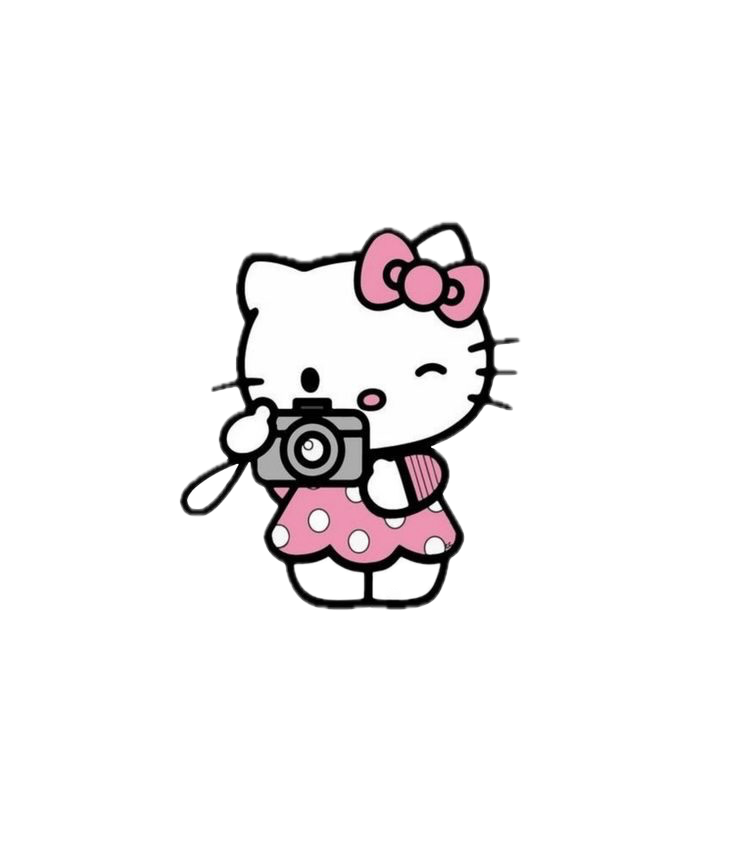 bakışına cevap olarak evt çok geç demek için ekledm.. ps : şi lavs yu ye ye yee.')">
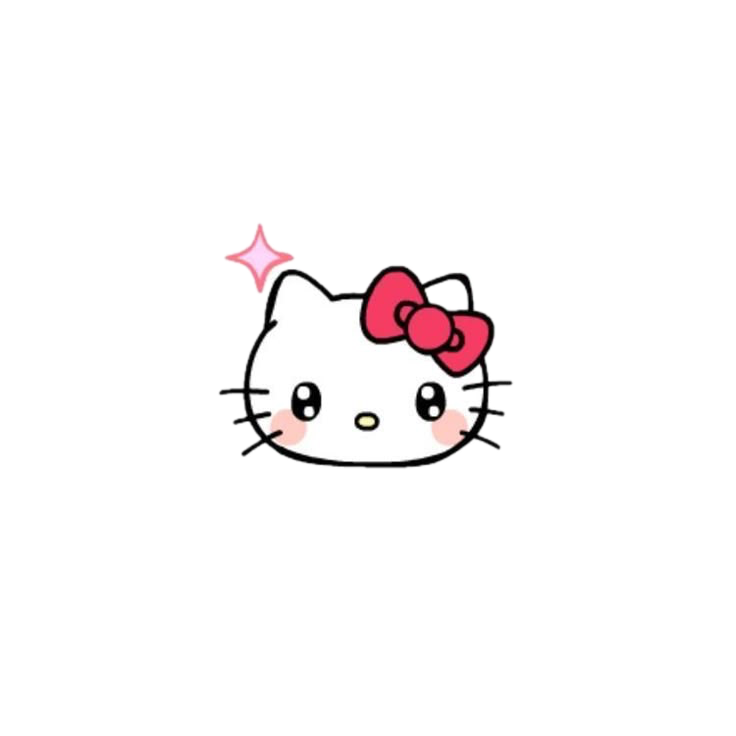
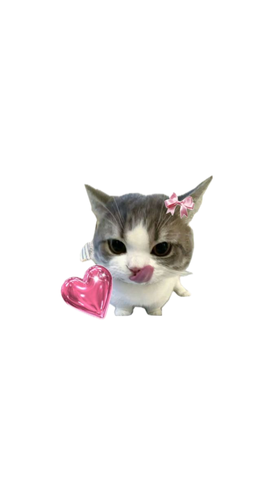
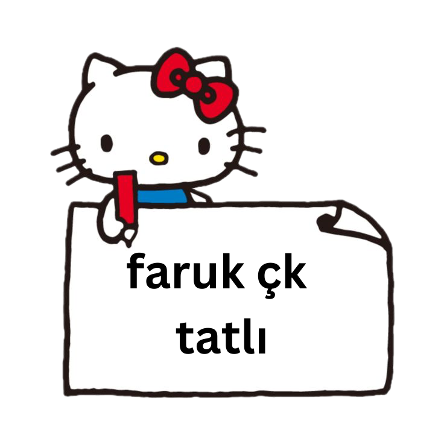
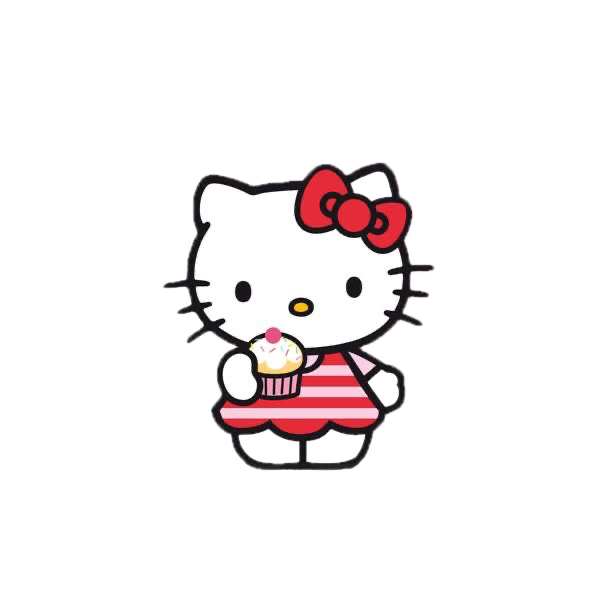
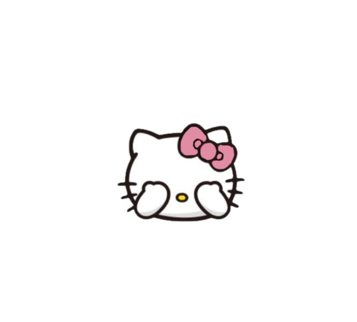
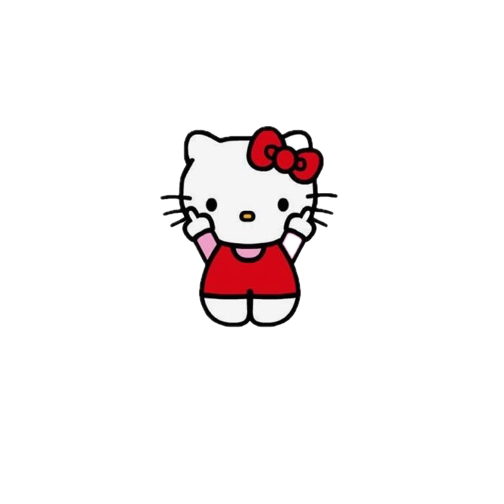
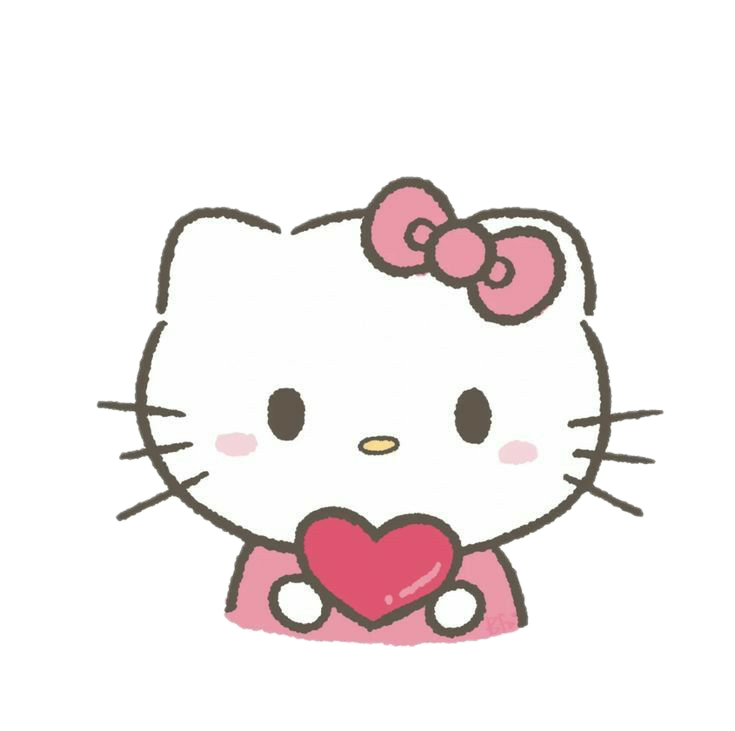
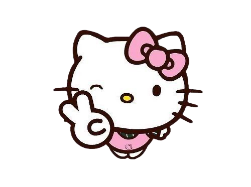
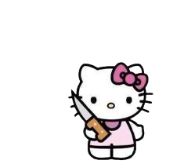 diyip atmıştın hatırlıyommm ve söylemediysem eğer bu şarkı da favorilerimdee, belki bu birazcık gülümsetir seni, wish you were here cidden balım')">
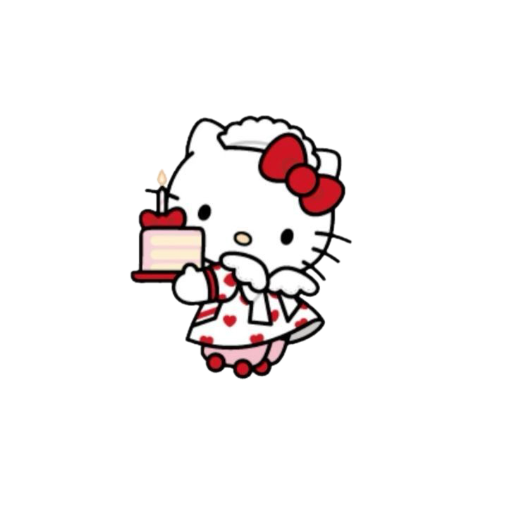
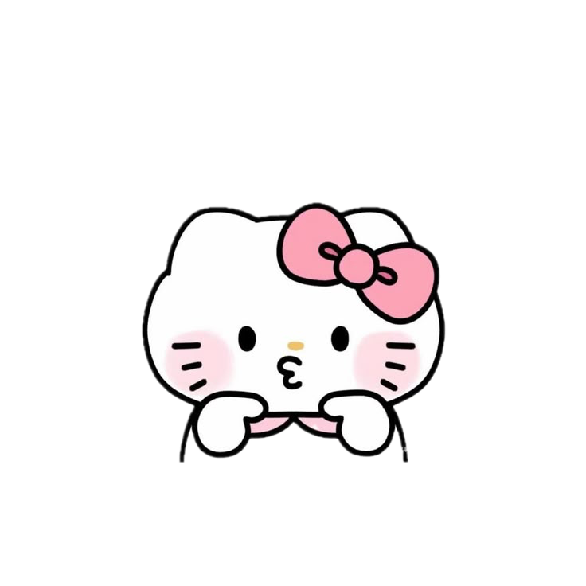
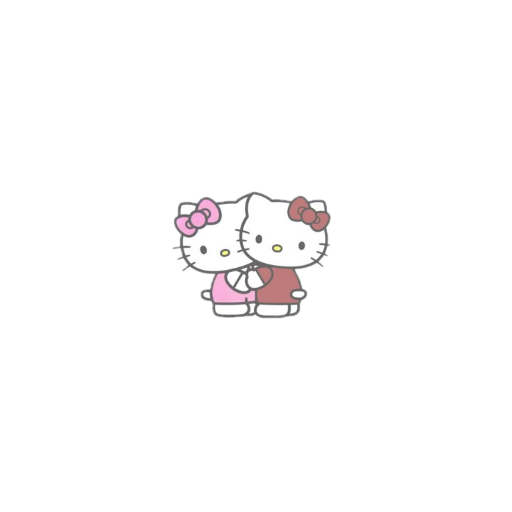
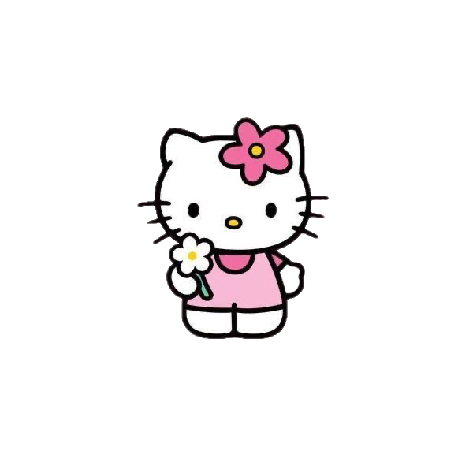